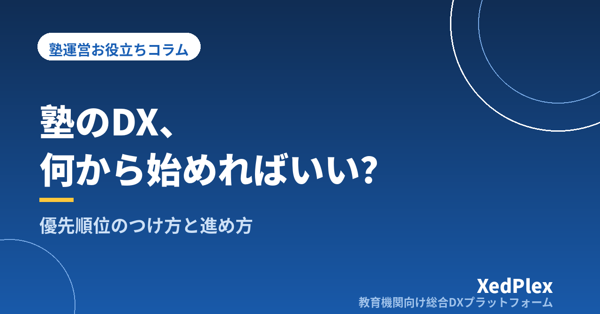

塾DXは何から始める？｜個人塾の優先順位・費用の目安・3か月の進め方

「これからは塾もDXだ」という話は、業界紙でもセミナーの案内でもよく目にします。ただ、教室をひとりで回している塾長からすると、正直なところ「言いたいことは分かるが、うちは何をすればいいのか」というのが本音ではないでしょうか。タブレットを入れることなのか、映像授業を導入することなのか、システムを契約することなのか。輪郭がはっきりしないまま、日々の授業と事務に追われて1年が過ぎていく──よくある話です。
結論から言えば、小さな塾のDXは「デジタル化する業務を選ぶ作業」です。全部を一度に変える必要はありませんし、そもそも変えなくていい業務もあります。この記事では、何から手をつけるかを決めるための2つの物差しと、多くの個人塾で効果が出やすい最初の3業務、Excel・LINEなどの身近なツールと塾管理システムの使い分け、費用の目安、3か月の進め方、そしてやりがちな失敗を整理します。
- 塾DXとは、生徒・保護者・授業・お金の情報をデジタルで記録して共有し、事務の手間とミスを減らして、空いた時間と記録を指導や保護者対応に使えるようにすることです。
- 小さな塾は、①生徒情報を1か所にまとめる → ②保護者への連絡を自動で届くようにする → ③請求・入金を名簿とつなげる、の順に進めると失敗しにくくなります。
- 塾長ひとり・生徒20名以下ならExcelやLINEでも十分なことが多く、生徒が30名を超えたり講師を雇ったりしたら、塾管理システムを検討する目安です。
- 費用は、月額が「生徒1〜2名分の月謝」に収まるかを目安にします。
- 切り替えは1か月に1業務ずつ、繁忙期を避けて3か月ほどかけます。
塾DXとは？小さな塾では「システム導入」とは限らない
塾DX（デジタルトランスフォーメーション）とは、紙・塾長の頭の中・講師個人のスマホに散らばっている情報をデジタルで記録して共有し、繰り返しの事務を仕組みに任せ、たまった記録を指導や面談、経営の判断に使えるようにすることです。オンライン授業や独自アプリの開発のような大きな取り組みだけを指す言葉ではありません。
DXという言葉が分かりにくいのは、目的と手段が混ざって語られるからです。小さな塾の現場に引き寄せると、やることは次の3層に分けられます。
| 層 | やること | 例 |
|---|---|---|
| 1. 記録を残す | 頭の中・紙にしかない情報を、あとから探せる形にする | 生徒名簿、出欠、指導内容、保護者とのやりとりの記録 |
| 2. 手作業を減らす | 毎回同じ手順で作っているものを、自動または半自動にする | 請求書の作成、入退室の連絡、一斉のお知らせ |
| 3. 記録を使って判断する | たまったデータを、指導や面談・経営の判断に使う | 成績の推移を面談で見せる、退塾の兆候に早く気づく |
順番が大切です。1がないまま2や3には進めません。記録が紙とスマホのメモに散らばっている状態でいきなり分析ツールを入れても、入れるデータがないからです。逆に言えば、「まず記録の置き場所を1つにする」だけでも、それは立派なDXの第一歩です。高価なシステムを契約することがDXなのではありません。
優先順位を決める2つの物差し
では、どの業務から手をつけるか。判断材料は2つだけで十分です。
物差し1：どれだけ「繰り返している」か
1回あたりの時間が短くても、毎週・毎月繰り返す作業は年間で見ると大きな塊になります。週1時間の作業は年間で約50時間、月4時間の作業は年間48時間です。一方、年に1〜2回しかない作業は、多少面倒でも後回しで構いません。まずは「今週もやったし、来週もやる」作業を書き出してください。
物差し2：ミスしたときの「手戻りと信頼の損失」が大きいか
もう1つは、間違えたときのダメージです。請求金額の誤り、連絡漏れ、生徒情報の取り違えは、やり直しの手間だけでなく保護者からの信頼を直接削ります。ここは人の注意力ではなく仕組みで守るべき領域です。
この2つを掛け合わせると、着手する順番が自然に決まります。
| ミスの影響が大きい | ミスの影響が小さい | |
|---|---|---|
| 繰り返しが多い | 最優先（請求・入金、保護者への連絡、出欠記録） | 次点（授業準備の教材整理、消耗品の発注） |
| 繰り返しが少ない | ルール化で対応（入塾手続き、月謝改定の告知） | 当面そのままでよい（掲示物の作成など） |
「忙しさの正体」をもう少し細かく分解したい場合は、個人塾の塾長が今日からできる業務効率化で紹介している棚卸し表を先に埋めてみるのが近道です。
最初に着手すると効果が出やすい3つの業務
上の表で「最優先」に入りやすく、かつ小さな塾でも取り組みやすいのが次の3つです。ここから順に進めるのが、遠回りに見えていちばん確実です。
(1) 生徒情報を1か所にまとめる
氏名・学年・連絡先・受講コース・入退塾日といった基本情報を、1つの場所に集約します。これが土台です。名簿がエクセル、連絡先がスマホの電話帳、コース情報が申込書のファイル、という状態だと、コース変更のたびに3か所を直すことになり、どこかが必ず古くなります。エクセル管理をいつまで続けられるかの判断も、この集約ができているかどうかが目安になります。
(2) 保護者への定期連絡を自動で届くようにする
入退室の通知や欠席連絡の受付は、保護者にとって「導入されたことがすぐ分かる」変化です。塾側も、電話の取り次ぎや折り返しが減ります。効果が見えやすいため、次の一歩への納得も得やすい領域です。具体的な方式の比較は紙・カード・QRの比較と保護者通知の仕組み、連絡手段の整理は講師の個人LINE頼みは危険？で扱っています。
(3) 請求・入金を名簿とつなげる
最後がお金まわりです。名簿の受講コースから請求額が組み立てられ、入金の消し込みまで同じ場所で追える状態にします。名簿と請求が別ファイルに分かれている限り、二重更新と請求ミスのリスクは消えません。手順は請求書発行を自動化する3段階にまとめています。
①生徒情報の集約 → ②保護者連絡の自動化 → ③請求・入金の連動
記録の土台をつくり、保護者に見える成果を出し、最後にお金の正確さを固める、という順番です。
Excel・LINEで進めるか、塾管理システムに移るか
3つの業務は、ExcelやGoogleスプレッドシート、LINE、Googleフォームといった身近なツールの組み合わせでも進められます。記録の置き場所を決めて使い続けるなら、それも立派なDXです。一方で、規模が大きくなると、ツールの間の転記がそのまま新しい手間になります。違いを整理すると次のとおりです。
| 汎用ツールの組み合わせ （Excel・LINE・Googleフォームなど） | 塾管理システム （塾向けに作られた専用のもの） | |
|---|---|---|
| 費用 | 無料〜少額 | 月額の利用料。初期費用がかかるものもある |
| 始めやすさ | すぐ始められ、使い方もすでに知っている | 初期設定と名簿の登録が必要 |
| 情報のつながり | 名簿・出欠・連絡・請求がツールごとに分かれ、転記が生まれる | 名簿を起点に、出欠・連絡・請求がつながる |
| 保護者への連絡 | 講師の個人LINEや、手作業の一斉送信になりがち | 入退室の通知やお知らせを、塾として送れる |
| 講師が増えたとき | 誰がどのファイルを直すかの決めごとが必要 | 職員ごとにアカウントと見られる範囲を分けられる |
| 向いている塾 | 塾長ひとりで事務を回せる、生徒20名以下の塾 | 講師が複数いる、保護者連絡や請求の手間が膨らんでいる塾 |
乗り換えを考える合図は、次のような状態です。
- 同じ情報（生徒の名前・コース・連絡先）を2か所以上に入力している
- 「最新の名簿はどのファイル？」と迷うことがある
- 保護者への連絡を、講師が個人のLINEで送っている
- 月末の請求書づくりに半日以上かかる、または請求額の間違いが起きたことがある
- 保護者から「子どもが塾に着いたか分かると安心」と言われている
生徒数の目安でいえば、塾長ひとり・生徒20名以下なら汎用ツールで十分なことが多く、生徒が30名を超えたり講師を雇ったりした段階で検討を始め、教室が2つ以上になると効果がはっきり出ます。判断の詳しい目安は個人塾の生徒管理、エクセルはいつまで使える？にまとめています。汎用ツールで進める場合も、名簿の項目と更新担当を先に決めておけば、あとでシステムに移るときに名簿をそのまま取り込みやすくなります（移し方はデータ移行と切り替えの手順）。
塾DXにかかる費用の目安
費用は、ツールの料金だけを見ると判断を誤ります。次の5つに分けて見積もります。
| 費用の種類 | 確認すること |
|---|---|
| 初期費用 | 導入時の設定費・登録代行費があるか。数十万円かかると、生徒30〜50名の塾では回収に時間がかかる |
| 月額の利用料 | 教室ごとの定額か、生徒数に応じた従量か。自塾の生徒数で月額を試算して比べる |
| オプション料金 | LINE通知・保護者向けの画面・決済などが別料金になっていないか |
| 機器 | 入退室の記録に使うタブレットやスマホ、QRコードのカードを用意するか |
| 切り替えの手間 | 名簿の入力し直しや、講師・保護者への説明にかかる時間 |
月額の目安は、「生徒1〜2名分の月謝」に収まるかどうかです。この範囲なら、浮いた事務の時間を授業1コマや募集の準備に回すだけで元が取れます。元が取れたかを判断できるように、始める前に「請求書づくりに月◯時間」「欠席連絡と振替の調整に週◯時間」と、今かかっている時間をメモしておいてください。
3か月の進め方（例）
一度に全部を切り替えると現場が混乱します。生徒数30〜60名程度の塾を想定した、無理のない進め方の一例です。
| 時期 | やること | できていれば合格 |
|---|---|---|
| 1か月目 | 名簿の項目を決めて入力し直す。入力担当と更新タイミング（入塾時・コース変更時）を決める | 最新の生徒情報が1か所で確認できる |
| 2か月目 | 出欠の記録と保護者への通知を運用に乗せる。1〜2週間は従来の方法と並走 | 塾長が手で送っていた連絡が減っている |
| 3か月目 | 請求を名簿と連動させる。初月は従来の計算と金額を突き合わせる | 請求書づくりが半分以下の時間で終わる |
始める時期は、募集や講習が重なる繁忙期を避けるのが鉄則です。新年度直前や夏期講習の直前に切り替えを始めると、慣らし期間が取れずに「やっぱり元のやり方で」となりがちです。季節講習の申込・請求管理で書いたとおり、講習期は事務が最も膨らむ時期でもあります。
よくある失敗と、その避け方
- 全部を一度に変えようとする：名簿・出欠・請求・連絡を同月に切り替え、どこで詰まったのか分からなくなるパターン。1か月に1業務までにとどめます。
- 紙とデジタルの二重運用が続く：「念のため紙も」を続けると、手間が増えるだけで効果が出ません。並走は最長1か月と決め、期限を切って紙をやめます。
- 塾長しか触れない仕組みになる：講師が入力できない設計だと、結局すべてが塾長に戻ってきます。アルバイト講師が5分の説明で使えるかを基準にしてください。
- ツールが増えすぎる：連絡用アプリ、名簿用ソフト、請求用サービスとバラバラに増やすと、転記作業が生まれます。増やす前に「これは今あるものと重複しないか」を確認します。
- 効果を測っていない：導入前に「この作業に月◯時間」とメモしておくと、3か月後に続けるか見直すかを事実で判断できます。
ツールを選ぶ段階に入ったら、機能の多さではなく自塾の基準で比べることが大切です。判断軸は小規模塾のためのシステム選び5つの基準にまとめています。
参考：XedPlex（ゼドプレックス）で進める場合
このコラムを運営する私たちは、学習塾・学童向けの管理システム「XedPlex（ゼドプレックス）」を提供しています。この記事の手順とXedPlexの機能の対応は次のとおりです。
| この記事の手順 | XedPlexの機能 |
|---|---|
| ①生徒情報を1か所にまとめる | 生徒管理・保護者管理・グループ管理。新年度などはCSVでまとめて登録できます |
| ②保護者への連絡を自動で届くようにする | QRコードでの入退室の記録と、保護者へのメール・LINEでの通知。保護者のスマホからの欠席・遅刻の連絡、保護者へのお知らせの配信、チャット |
| ③請求・入金を名簿とつなげる | 月謝・教材費などの請求を月ごとに作って確定し、保護者の画面に公開。入金の記録、未入金の抽出、領収書の発行 |
| 記録を使って判断する | 成績記録、個別指導の指導報告書、面談予定の管理、生徒分析、AIへの指導方針の相談（AI指導相談）など |
料金は、初期費用0円、利用する生徒1名あたり月額300円（税込、1〜100名の場合）です。生徒50名なら月15,000円（税込）。101〜350名は1名270円、351名以上は1名240円になります。月払いなら最低利用期間はなく、年払いは15%割引です。AI指導相談だけは、月々の無料枠つきの従量制です。
XedPlexが向いている塾
- 名簿・保護者への連絡・請求を、1つの仕組みにまとめたい個人塾・小規模塾
- 学童（放課後の預かり）や送迎もしていて、登下校の記録と保護者への通知が必要な塾
- 個別指導で、講師・契約・授業の記録や指導報告書もまとめて扱いたい塾
ほかの手段と組み合わせること
- 月謝の集金そのもの：XedPlexは請求の作成と、入金の記録・確認が中心です。保護者が画面からカードで支払う機能はないため、集金は振込・現金など今の方法と組み合わせます。集金方法の比較は個人塾の月謝管理・集金方法まとめをご覧ください。
- 授業の配信：映像授業を配信するシステムではありません。オンライン授業は、個別指導の授業にZoom・Teamsなどの会議のURLを登録して案内する形です。
塾長ひとり・生徒20名以下で、今のExcelやLINEで困っていないなら、無理に導入する必要はありません。上の「乗り換えを考える合図」が出てきたときに、比べる候補の1つとしてご検討ください。
塾DXでよくある質問
生徒20〜30名の小さな塾でも、DXは必要ですか？
システムの導入が必要とは限りません。ただ、「記録の置き場所を1つにする」ことは、規模にかかわらず効果があります。名簿・出欠・保護者とのやりとりの記録が1か所にそろっていれば、講師が増えたときにも、システムに移るときにも、そのまま使えます。
授業のオンライン化やタブレット学習も、塾DXですか？
はい、授業や教材のデジタル化も塾DXの一部です。ただ、小さな塾が先に取り組むなら、この記事で扱った運営の事務（名簿・連絡・請求）からをおすすめします。毎週・毎月繰り返している作業なので効果が早く出て、保護者にも変化が伝わりやすいからです。授業や教材のデジタル化は、記録の土台ができてから考えても遅くありません。
ITが苦手な講師がいても進められますか？
進められます。最初から全部を任せず、講師にお願いするのは出欠の入力と指導の記録だけ、というように範囲を絞ります。選ぶ段階で「アルバイト講師が5分の説明で使えるか」を確かめておくと、導入後に塾長だけが入力する状態を避けられます。研修の進め方は個人塾の講師研修も参考にしてください。
補助金は使えますか？
国の「デジタル化・AI導入補助金」（旧IT導入補助金）は、事務局に登録されたITツールを、登録された支援事業者と一緒に申請する仕組みです。使いたい場合は、ツールを決める前に、候補が対象のツールとして登録されているかを提供元に確認します。公募の回・締切・要件は年度や回ごとに変わるため、申請の前に公式サイトで最新の公募要領を確認してください（2026年11月時点の情報です）。
AIはどの段階で使えばいいですか？
記録がそろってからのほうが効果が出ます。保護者へのお知らせや面談資料の下書きなど、文章づくりはすぐにでも試せますが、生徒一人ひとりに合わせた助言には、出欠や成績、指導の記録が必要だからです。任せてよいことと人が担うことの線引きは個人塾のAI活用、現実的にできること・任せないほうがいいことで解説しています。
まとめ
塾のDXは、流行の道具をそろえることではなく、繰り返していて、間違えると痛い業務から順にデジタルに預けていく作業です。まず生徒情報を1か所にまとめ、次に保護者への連絡を自動で届くようにし、最後に請求と名簿をつなげる。この順番なら、教室ひとつ・塾長ひとりでも3か月で形になります。
今日できることは1つだけです。今週やった事務作業を紙に書き出し、「来週もやるか」「間違えたら困るか」の2つで丸をつけてみてください。丸が2つついた作業が、あなたの塾のDXの出発点です。
この記事を書いた運営より
私たちは、個人経営・小規模の学習塾向けに、生徒管理・QRコードでの入退室記録・月次請求・保護者へのLINE/メール通知・AIによる学習支援までをひとつにまとめた教育機関向け総合DXプラットフォーム「XedPlex（ゼドプレックス）」を開発・提供しています。初期費用は0円、料金は生徒1名あたり月額300円（税込）から。生徒50名の塾なら月15,000円（税込）です。全国8つの教室で導入されており、導入塾には紹介ホームページの無料作成も行っています。機能の詳細説明はこちら。
XedPlexの詳細を見る